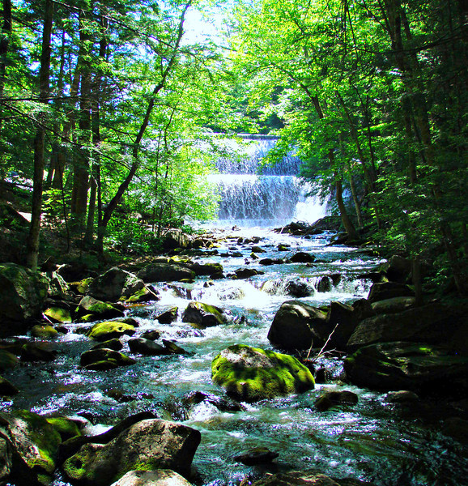
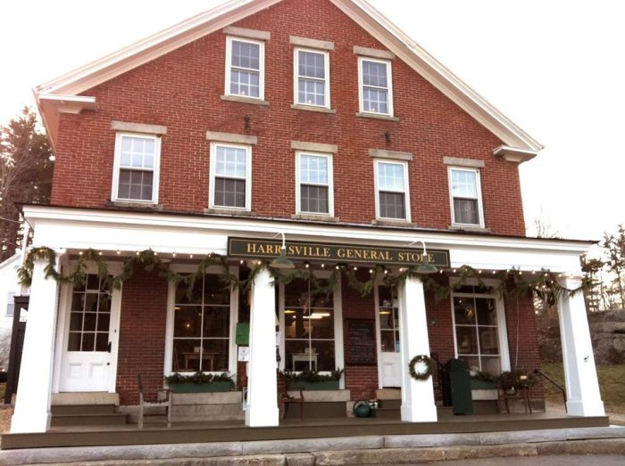
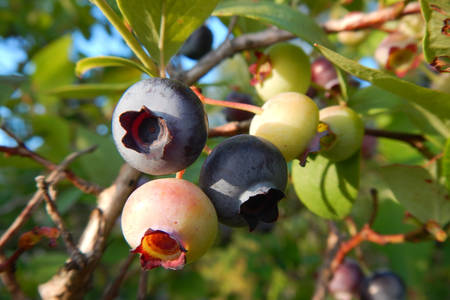

-Welcome Home-
- Weddings
- Vacations
- Reunions
Properties:
Our homes have been built by and cared for by generations of our family. Whether you enjoy rustic mountain lodges, classic farmhouses or quaint cottages, we have the place for you. Welcome to the family.
Who We Are:
We enjoy sharing our corner of the world with all those who appreciate the splendor of nature and time spent together

Recommendations:
Hike the Eliza Adams Gorge

Visit the Historic Harrisville General Store

Simply enjoy walking out to the backyard in the summer months and pick blueberries from our hundreds of bushes
(if you don't eat them all as you go,
try our favorite pie recipie here)

- Contact Us About Your Rental
- Event Management
- Blueberry summers
We look forward to hosting your next event!
With love and blueberries,
The Kaspers